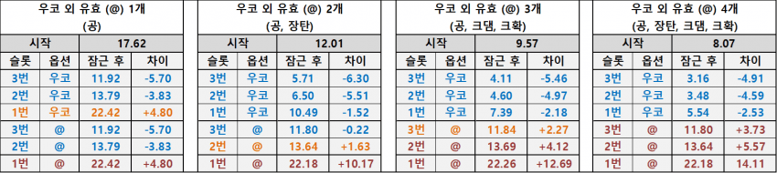
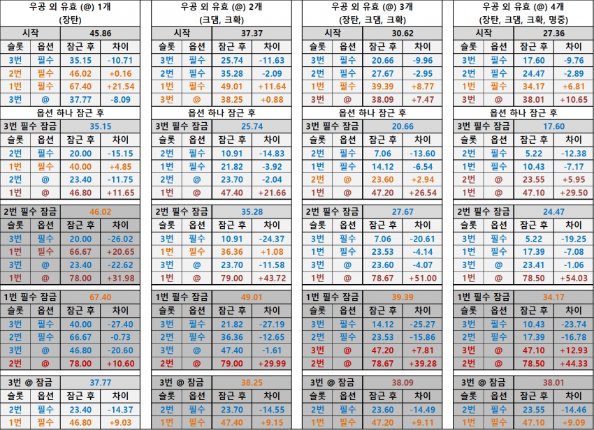

https://gall.dcinside.com/mgallery/board/view/?id=gov&no=5149259
저번에 올렸던 공략글인데 가독성이 너무 구린 것 같아서 다르게 정리해봤음
유효옵이 떴을 때 해당 옵션을 잠글까 말까? 에 대한 판단 기준임 (오로지 모듈 기대 소모량 관점에서만 따짐)
표 읽는 법
시작 = 최적 전략을 따랐을 때 모듈 소모 기대값
잠근후 = 잠근 후 모듈 소모 기대값
따라서 잠근후가 시작보다 작으면 그 만큼 이득이라는 거임
차이가 음수: 그 만큼 모듈 소모량이 줄어드는거니까 잠그는게 좋음
차이가 양수: 그 만큼 모듈 소모량이 늘어나는거니깐 수치가 그 정도 가치 있다고 판단 되는 경우가 아니면 넘김
효과변경을 열심히 누르다가
파란색이 뜬다 -> 잠근다
주황색이 뜬다 -> 수치 좋으면 고민한다, 안 좋으면 넘어간다
빨간색이 뜬다 -> 넘어간다
2줄작

*@: 우코 외 유효
3줄작

*필수: 우코/공
*@: 우코/공 외 유효
예시) 수화 옵션작을 하려고 하는데 우공+장크크 중 아무거나 뜨면 만족한다는 마인드로 3줄작을 하려고 함
1. 3줄작 표에서 3번째 열 "우공 외 유효 (@) 3개" 를 찾음
2. 파란색에 해당하는 옵션 (3번 or 2번 슬롯에 우코 또는 공증) 이 나올 때까지 효과 변경을 누름
3. 만약 2번 슬롯에 공이 나왔다면 잠근 후 하위 표 중 "2번 필수 잠금" 를 찾음
4. 파란색에 해당하는 옵션 (3번 or 1번 슬롯에 우코 또는 공증, 3번 슬롯에 장크크) 이 나올 때까지 효과 변경을 누름
5. 4번에서 먼저 나온 옵션 잠근 후 나머지를 찾음
재밌는 점이라면 우공 외 유효가 3개 이상일 때는
그냥 2줄작 한다고 생각하고 우공 맞춘 다음에 나머지에서 남은 유효 찾는 전략으로 가도 손해나는 경우 거의 없음
3번슬롯에 집착할 필요 없고, 우공 아닌 유효는 들고가는 게 비효율적이기 때문임
노랑/빨강 기준은 사람마다 다를테니 알아서 판단하셈
고려되지 않은 내용
1. 수치작
2. 잠금 재화
3. 실제로는 최종 목표를 명확히 정하기보다는 돌리다가 2줄작으로 끝낼지 3줄작으로 끝낼지 판단하게 될 때가 많아서 4줄, 8줄, 12줄만 있는게 아니라 6줄 10줄 이런식으로 되는 경우도 많은건데 이런 부분까지 고려되지는 않음
4. 일부 옵션 (특히 장탄)은 다른 장비에 떴는가 아닌가에 따라 그 가치가 많이 변하는 점
5. 언젠간 3줄 종결을 보고 싶지만 당장엔 모듈이 적어서 1~2줄로 타협하고 써야하는 상황
더 복합적으로 생각할 점이 많아서 그냥 기준점, 참고점 정도로만 생각해주면 좋겠음.
표보기 싫은 사람들은 이것만 알아가자
3줄작 할 때 기준
우공 외 유효가 하나뿐인 경우 (ex. 우공+장)
-> 3줄, 2줄, 1줄 순서로 잠그기
우코, 공, 장탄 중 아무거나 먼저 3줄 뜨는거 부터 잠그면 됨
우공 외 유효가 셋인 경우 (ex. 우공+장크크)
-> 우공부터 찾고 장크크는 마지막에 찾기
2줄에 우공부터 뜨면 잠그는 게 이득
3줄이나 2줄에서 우공 잠근 상태면 1줄 우공 잠그는게 이득
장크크 같은걸 안 잠그는 게 중요함